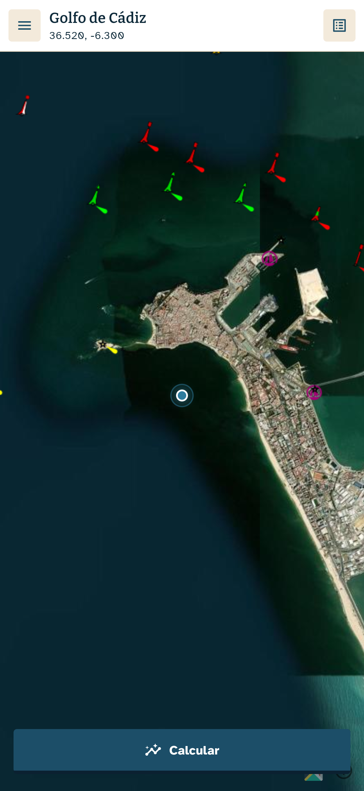
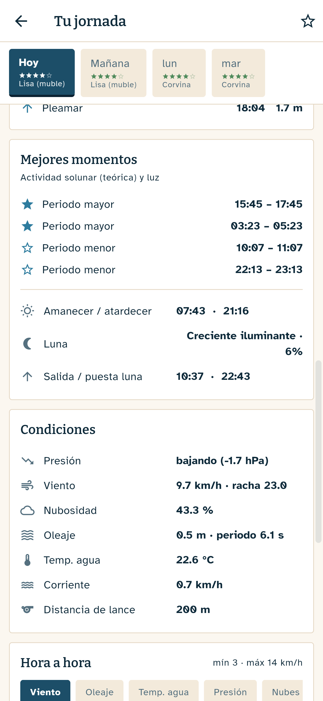

Cómo funciona
Toca tu playa
Mapa de satélite con carta náutica. Sin GPS: el punto lo eliges tú, hasta la escollera exacta.
Elige el día
Hoy y tres días más, cada uno con su nota. La confianza de la predicción decae con el horizonte, y la app lo dice.
Sal a pescar
El pez del día con su hora top, cebo, montaje y distancia de lance. Y por qué: la fórmula explica qué suma y qué resta.
Lo que hay dentro


Por qué es distinta
Nota por especie, no una genérica
Un mismo día puede ser de 4★ para la dorada y malo para la lubina. 16 perfiles: dorada, lubina, sargo, corvina, herrera… y roster propio para Canarias.
La hora top del día
Amanecer, atardecer, noche: las mejores ventanas de actividad de cada especie, con luz, solunar y marea combinados.
El fondo marino de verdad
Arena, roca o fango según la cartografía geológica europea (EMODnet). El montaje que sugiere cambia con el fondo. Y si conoces tu playa mejor que el mapa, lo corriges tú.
Marea calculada, no copiada
Pleamares, bajamares, coeficiente y la curva del día, calculados por armónicos para más de un centenar de estaciones españolas.
Hora a hora
Viento, oleaje, presión y su tendencia, nubes, temperatura del agua y corriente, en gráficas que se leen con el dedo.
Sin cuentas y sin rastreo
No pide registro, ni ubicación, ni lleva analítica ni anuncios. Abres, consultas y a pescar. Política de privacidad.
Honestidad primero
Esto es una previsión orientativa a partir de modelos meteorológicos y marinos, no una bola de cristal: el mar decide. Por eso el horizonte son 3-4 días con su confianza a la vista, y nunca semanas.
No es información de seguridad ni de navegación. Antes de salir, consulta los avisos oficiales de AEMET y respeta la normativa de pesca de tu comunidad.